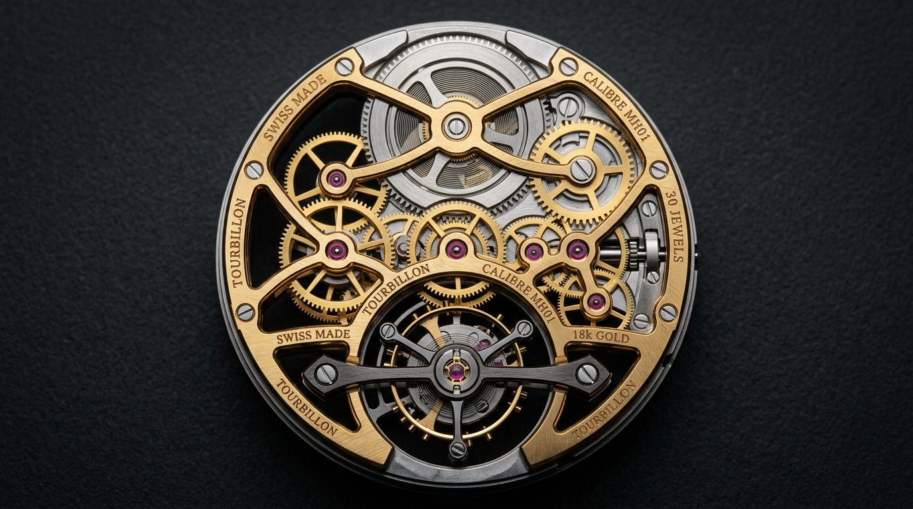
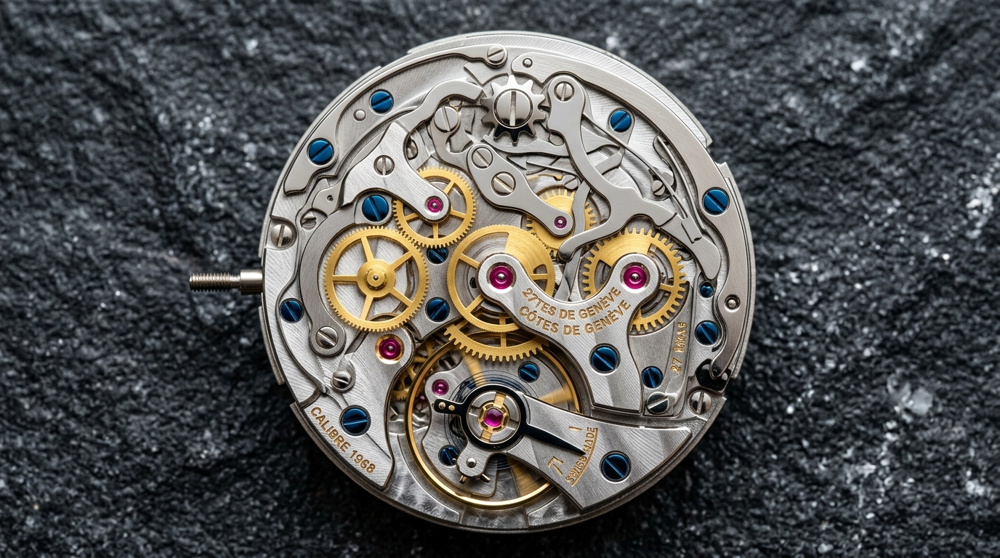
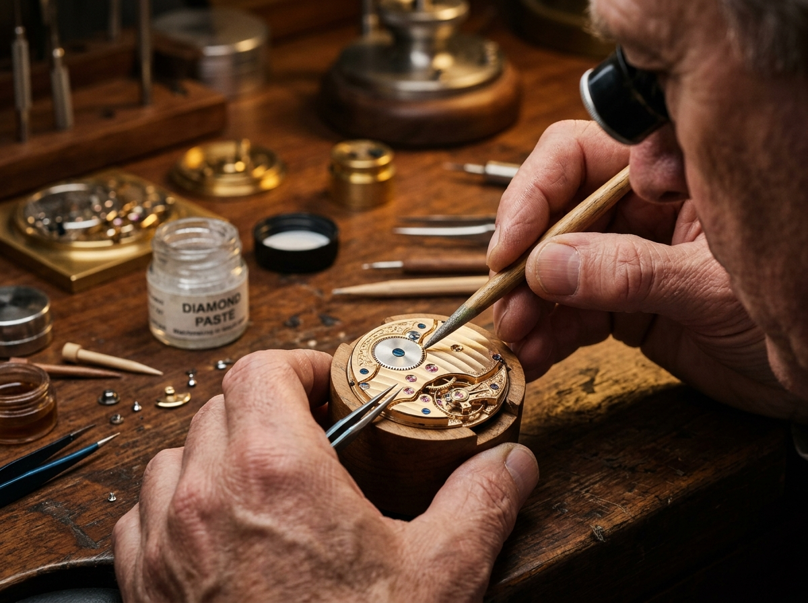
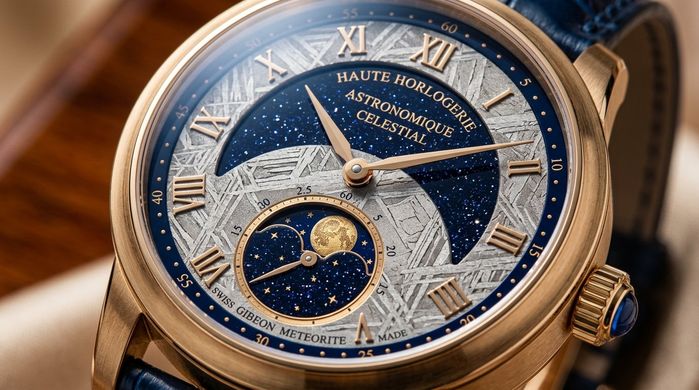

The Architecture of Time.
Witness 342 hand-finished gold components suspended in mechanical harmony. Precision engineered for eternal rhythm.
The Calibre Collection
Three distinct architectural movements engineered in the Vallée de Joux, deconstructed to celebrate mechanical transparency and chronological supremacy.

Calibre WM-01 Squelette
Openworked architecture revealing the breathing escapement, titanium cage, and hand-chamfered bridges polished with traditional boxwood paste.
18K Honeygold Alloy
Proprietary gold formulation infused with copper and platinum for higher Vickers hardness (300 HV) and timeless warm luster that never fades.

41mm Monobloc Architecture
Water resistant to 50 meters with screw-down sapphire exhibition caseback and integrated lugs crafted to drape seamlessly across the wrist.
-2 / +2 Sec Daily
Tested in 5 positions over 360 hours under extreme thermal fluctuation (-5°C to +45°C).
Deconstructed Architecture
Explore the four critical horological modules that constitute the heartbeat of our calibres. Select any component below to inspect micro-tolerances and CAD parameters.
Free-Sprung Gyromax
Variable inertia balance wheel with gold poise adjustment collets, eliminating regulator curb pins for uncompromised isochronism.
Silicon & Ruby Escapement
Anti-magnetic monocrystalline silicon escapement wheel paired with bevelled synthetic ruby pallets. Requires zero liquid lubrication.
Twin Co-Axial Barrels
Dual mainspring barrels coupled in series to deliver a linear, constant torque curve across all 72 hours of autonomy.
Box Sapphire Glass
Cambered corundum crystal with 7-layer anti-reflective vapor deposition on both sides, ensuring zero refraction distortion from any angle.
Free-Sprung Gyromax Balance Dynamic Rig
The oscillation frequency is sustained at 28,800 vibrations per hour. Four adjustable eccentric gold weights seated along the rim allow micrometric regulation without touching the active length of the balance spring.
The Hands Behind The Rhythm.
At our manufacture in Le Brassus, no machine can replicate the soul of manual decoration. Each bridge, screw, and wheel undergoes over 40 hours of hand-anglage by master artisans using century-old gentian wood and diamond pastes.
Anglage à la Main (Hand Chamfering)
The edges of each bridge are hand-filed to a precise 45-degree angle, followed by progressive smoothing with emery paper and polishing with wood sticks soaked in diamond paste to achieve a flawless mirror curve with sharp interior angles.

A Century of Chronometry
From an independent cabinotier workshop in 1898 to the contemporary pioneers of openworked horological sculpture.
Founding of the Atelier
Master watchmaker Jean-Pierre Meuron establishes his independent workshop, specializing in pocket watch escapements and split-second flyback chronographs for royal observatories.
The Constant-Force Invention
Awarded the First Class Grand Prix at the Geneva Concours de Chronométrie for inventing a patented spring-barrel shock damper that stabilized isochronism during severe altitude shifts.
The Monobloc Honeygold Case
Defying the quartz crisis, the manufacture unveiled its first solid 18K honeygold integrated sports timepiece, validating mechanical mastery as timeless wearable art.
The Deconstructed Epoch
Launch of the Flying Tourbillon Squelette No. 01 — completely openworked architecture with zero dial obstruction, uniting historical hand-finishing with Grade 5 titanium kinetic cages.
Bespoke Horology Studio
Personalize your bespoke commission. Select case metallurgy, dial finish, and handcrafted strap to visualize your singular heirloom.

Acquire Your Timepiece
Due to our annual production cap of 50 pieces per calibre, allocations are reviewed directly by the Master Watchmaker. Please register your acquisition intent.